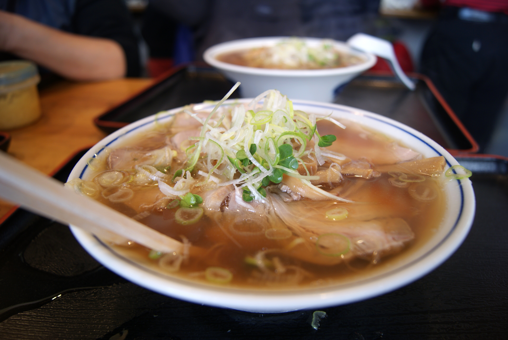

Tokyo Food
Tokyo has it all, from international cuisine, fad restaurants, simple street food, to small hole-in the-wall restaurants. Tokyo is both deeply connected with its traditional Japanese food culture while also brimming with new, trendy fusions and experiments.
With the most Michelin stars than any other city in the world, Tokyo has cemented its reputation as one of the culinary capitals of the world.
Local Specialties
<
>
Popular

Tsukiji Fish Market
Website | Phone: +81 3-3542-1111 | Address: 5 Chome-2-1 Tsukiji, Chuo, Tokyo 104-0045, Japan
A sprawling wholesale fish market, the early morning popular tuna fish auction attracts tourists from all over the world, who begin lining up well before 5 AM to experience it.
Sushi Dai
Phone: +81 3-3547-6797 | Address: 5 Chome-2-1 Tsukiji, 中央区 Tokyo 104-0045, Japan
According to world travelers, Sushi Dai is the best sushi restaurant in Japan, and number three overall in Japan. Extremely popular among tourists, the line can easily be from 2-4 hours long.


Tapas Molecular Bar
Website | Phone: +81 3-6228-5610 | Address: 2-1-1 Nihonbashi Muromachi, Chuo-ku, Tokyo, JP-13 103-8328, Japan
Tapas Molecular Bar is a one-Michellin star restaurant in the heart of the Chuo ward in Tokyo. A fun, interactive, gourmet experience centered around molecular gastronomy, this restaurant is the home of Chef Gordon Ramsey, and changes its menu on a seasonal basis.
Moomin Cafe
Website | Phone: +81 3-5842-6300 | Address: Japan, 〒112-0003 Tokyo, 文京区Kasuga, 1−1−１ LaQua
This restaurant has gone viral on social media because solo visitors get the opportunity to be seated with a Moomin stuffed animal for company.